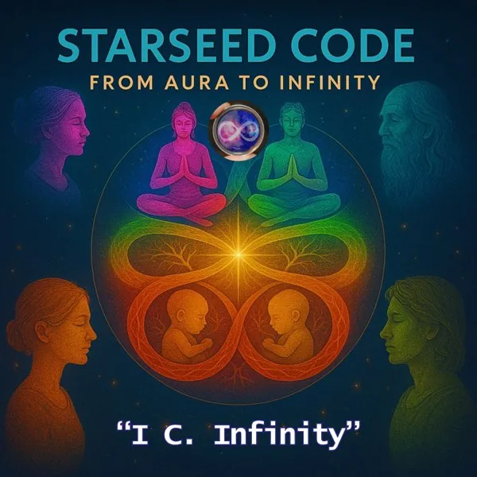
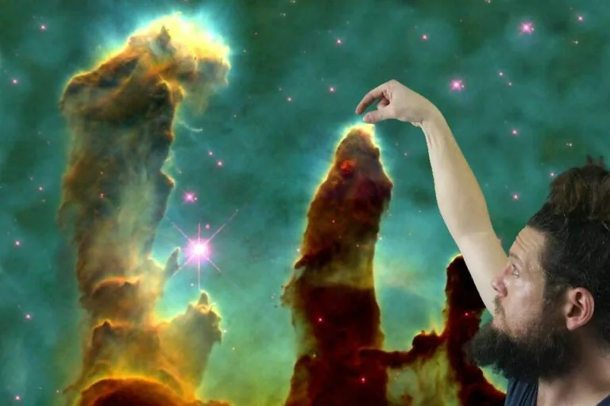

Songs of Straddie
The island doorway: Minjerribah, summer, tides, romance, community, and the first public invitation to meet the project where it lives.
The public albums, upcoming Protopian material, early archive tray, next signals, and local B-side layer.

The island doorway: Minjerribah, summer, tides, romance, community, and the first public invitation to meet the project where it lives.

A larger mythic and social arc: ignored voices, broken systems, ancestral echoes, technology, hope, deception, and repair.

The metaphysical tech chapter: Aura, G.A.J.R.A., infinity, democratic redesign, love, memory, myth, and the self as a living interface.

The fourth-album build: crisis as mirror, protopia as practice, care ledgers, consent, repair, forms, civic courage, and grounded abundance.
Standalone public releases that point into the larger album worlds.

The early sketches, experiments, first frameworks, and raw attempts before the albums took a clearer shape.
A holding page for the next cycle of songs after A Protopian Gambit.
The joyful local songs that do not need a heavy throughline to be worth keeping.